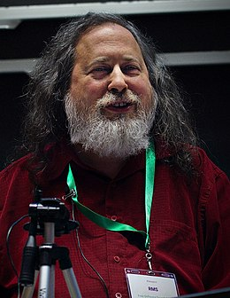

Richard Matthew Stallman, né le 16 mars 1953 à Manhattan, connu aussi sous les initiales rms (en minuscules), est un programmeur et militant du logiciel libre. Initiateur du mouvement du logiciel libre, il lance, en 1983, le projet GNU et la licence publique
générale GNU connue aussi sous le sigle GPL Depuis le milieu des années 1990, il consacre la majeure partie de son temps à la promotion des logiciels libres auprès de divers publics un peu partout dans le monde. Depuis quelques années, il
fait campagne contre les brevets logiciels et la gestion des droits numériques (DRM) Le temps qu’il alloue encore à la programmation est consacré à GNU Emacs, bien qu’il ne soit plus le mainteneur principal depuis février 2008. Il gagne sa
vie en partie avec les cachets de conférencier qu’on lui donne à l’occasion ou des prix qu’on lui remet. En 2010, un récit biographique qui relate la vie de Richard Stallman paraît en français sous le titre Richard Stallman et la révolution
du logiciel libre.
Le projet GNU est un projet informatique dont les premiers développements ont été réalisés en janvier 1984 Le projet est maintenu par une communauté de hackers organisée en sous-projets. Chaque brique du projet est un logiciel libre utilisable de par
sa nature dans des projets tiers, mais dont la finalité est de s’inscrire dans une logique cohérente avec l’ensemble des sous-projets en vue de la réalisation d’un système d’exploitation complet et entièrement libre, et avec pour stratégie,
l’utilisation de l’existant. Les objectifs et la philosophie du projet sont par ailleurs définis dans le manifeste, lequel représente l’acte fondateur du mouvement du logiciel libre. Le projet GNU s’inscrit enfin dans une démarche sociale
en plaçant les fondements philosophiques du mouvement devant les objectifs techniques du projet